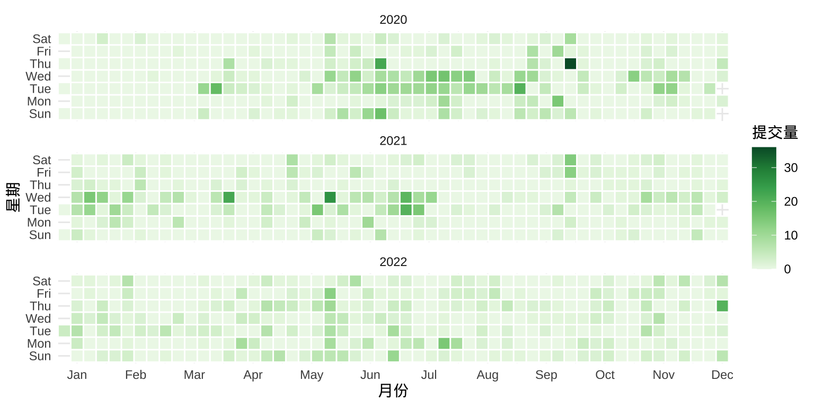

7 基础图形
本章按照图形作用分类介绍各种各样的统计图形，每个小节包含 5-8 个常用的图形，每个图形会结合数据说明其作用、绘制代码。希望借助真实的数据引发读者兴趣，提出问题，探案数据，讲故事，将其应用于其它场景，举一反三。除了数据获取、清理和预处理的工作外，从原始数据出发，还将穿插介绍图形绘制相关的数据操作，比如适当的分组计算、数据重塑等操作。当然，不可能逐行给出代码的说明和使用，因为这会显得非常累赘。探索数据和绘制图形的过程中，会有很多的中间代码，这些也不再展示了，仅给出最终展示图，但会做适当说明。
- 章节 7.1 探索、展示数据中隐含的趋势信息，具体有折线图、瀑布图、曲线图、曲面图、热力图、日历图、棋盘图和时间线图。
- 章节 7.2 以图形展示数据对比，达到更加突出、显著的效果，让差异给人留下印象，具体有柱形图、条形图、点线图（也叫克利夫兰点图）、雷达图和词云图。
- 章节 7.3 探索、展示数据中隐含的比例信息，以突出重点，具体有简单饼图、环形饼图、扇形饼图、帕累托图、马赛克图和矩阵树图。
7.1 描述趋势
GNU R 是一个自由的统计计算和统计绘图环境，最初由新西兰奥克兰大学统计系的 Ross Ihaka 和 Robert Gentleman 共同开发。1997 年之后，成立了一个 R Core Team（R 语言核心团队），他们在版本控制系统 Apache Subversion上一起协作开发至今。25 年—四分之一个世纪过去了，下面分析他们留下的一份开发日志，了解一段不轻易为人所知的故事。
首先，下载 1997 年至今约 25 年的原始代码提交日志数据。下载数据的代码如下，它是一行 Shell 命令，可在 MacOS 或 Ubuntu 等 Linux 系统的终端里运行，借助 Apache Subversion 软件，将提交日志导出为 XML 格式 的数据文件，保存在目录 data-raw/ 下，文件名为 svn_trunk_log_2022.xml，本书网页版随附。
去掉没什么信息的前5次代码提交记录：初始化仓库，上传原始的 R 软件源码等。 从 Ross Ihaka 在 1997-09-18 提交第 1 次代码改动开始，下载所有的提交日志。截至 2022-12-31，代码最新版本号为 83528，意味着代码仓库已存在 8 万多次提交。
下载数据后，借助 xml2 包预处理这份 XML 格式数据，提取最重要的信息，谁在什么时间做了什么改动。经过一番操作后，将清洗干净的数据保存到目录 data/ 下，以 R 软件特有的文件格式保存为 svn-trunk-log-2022.rds，同样与书随附。这样下来，原 XML 格式保存的 35 M 文件减少为 1 M 多，极大地减少存储空间，方便后续的数据探索和可视化。下面是这份日志数据最初的两行：
#> revision author stamp msg
#> 1 6 ihaka 1997-09-18 04:41:25 New predict.lm from Peter Dalgaard
#> 2 7 ihaka 1997-09-18 04:42:42 Updated release number一共是四个字段，分别是代码提交时记录的版本号 revision，提交代码的人 author，提交代码的时间 stamp 和提交代码时伴随的说明 msg。接下来，带着问题一起探索开源自由的统计软件 R 过去 25 年波澜壮阔的历史！
7.1.1 折线图
不再介绍每个函数、每个参数和每行代码的作用，而是重点阐述折线图的作用，以及如何解读数据，阐述解读的思路和方向，建立起数据分析的思维。将重点放在这些方面，有助于书籍存在的长远意义，又结合了最真实的背景和原始数据，相信对实际工作的帮助会更大。而对于使用到统计方法的函数，则详加介绍，展示背后的实现细节，而不是调用函数做调包侠。
折线图的意义是什么？在表达趋势变化，趋势的解读很重要。先来了解一下总体趋势，即过去 25 年里代码提交次数的变化情况。数据集 svn_trunk_log 没有年份字段，但时间字段 stamp 隐含了年份信息，因此，新生成一个字段 year 将年份信息从 stamp 提取出来。
svn_trunk_log <- within(svn_trunk_log, {
# 提取日期、月份、年份、星期、第几周、第几天等时间成分
year <- as.integer(format(stamp, "%Y"))
date <- format(stamp, format = "%Y-%m-%d", tz = "UTC")
month <- format(stamp, format = "%m", tz = "UTC")
hour <- format(stamp, format = "%H", tz = "UTC")
week <- format(stamp, format = "%U", tz = "UTC")
wday <- format(stamp, format = "%a", tz = "UTC")
nday <- format(stamp, format = "%j", tz = "UTC")
})
# 代码维护者 ID 和姓名对应
ctb_map <- c(
"bates" = "Douglas Bates", "deepayan" = "Deepayan Sarkar",
"duncan" = "Duncan Temple Lang", "falcon" = "Seth Falcon",
"guido" = "Guido Masarotto", "hornik" = "Kurt Hornik",
"iacus" = "Stefano M. Iacus", "ihaka" = "Ross Ihaka",
"jmc" = "John Chambers", "kalibera" = "Tomas Kalibera",
"lawrence" = "Michael Lawrence", "leisch" = "Friedrich Leisch",
"ligges" = "Uwe Ligges", "luke" = "Luke Tierney",
"lyndon" = "Others", "maechler" = "Martin Maechler",
"mike" = "Others", "morgan" = "Martin Morgan",
"murdoch" = "Duncan Murdoch", "murrell" = "Paul Murrell",
"pd" = "Peter Dalgaard", "plummer" = "Martyn Plummer",
"rgentlem" = "Robert Gentleman", "ripley" = "Brian Ripley",
"smeyer" = "Sebastian Meyer", "system" = "Others",
"tlumley" = "Thomas Lumley", "urbaneks" = "Simon Urbanek"
)
svn_trunk_log$author <- ctb_map[svn_trunk_log$author]接着，调用分组聚合函数 aggregate() 统计各年的代码提交量。
然后，将数据集 trunk_year 以折线图展示，如 图 7.1 所示。
library(ggplot2)
ggplot(data = trunk_year, aes(x = year, y = revision)) +
geom_point() +
geom_line() +
theme_classic() +
theme(panel.grid.major.y = element_line(colour = "gray90")) +
labs(x = "年份", y = "提交量")为什么呈现这样的变化趋势？我最初想到的是先逐步增加，然后下降一会儿，再趋于平稳。这比较符合软件从快速迭代开发期，过渡到成熟稳定期的生命周期。接着，从小时趋势图观察代码提交量的变化，发现有高峰有低谷，上午高峰，晚上低峰，但也并不是所有年份都一致，这是因为开发者来自世界各地，位于不同的时区。
aggregate(data = svn_trunk_log, revision ~ year + hour, length) |>
ggplot(aes(x = hour, y = revision, group = year)) +
geom_line() +
geom_line(data = function(x) subset(x, year < 2006),
aes(color = as.character(year))) +
theme_classic() +
labs(x = "时段", y = "提交量", color = "年份")最后，观察代码提交量的月趋势图，12月和次年1月、7-8 月份提交量迎来小高峰，应该是教授们放寒暑假。
aggregate(data = svn_trunk_log, revision ~ year + month, length) |>
transform(date = as.Date(paste(year, month, "01", sep = "-"))) |>
ggplot(aes(x = date, y = revision)) +
geom_point(aes(color = factor(year)), show.legend = F, size = 0.75) +
geom_line(aes(color = factor(year)), show.legend = F) +
scale_x_date(date_minor_breaks = "1 year") +
theme_classic() +
theme(panel.grid.minor.x = element_line()) +
labs(x = "时间（月粒度）", y = "提交量")7.1.2 瀑布图
相比于折线图，瀑布图将变化趋势和增减量都展示了，如 图 7.4 所示，每年的提交量就好像瀑布上的水，图中每一段水柱表示当期相对于上一期的增减量。瀑布图是用矩形图层 geom_rect() 构造的，数据点作为矩形对角点，对撞型的颜色表示增减。
trunk_year <- trunk_year[order(trunk_year$year), ]
trunk_year_tmp <- data.frame(
xmin = trunk_year$year[-length(trunk_year$year)],
ymin = trunk_year$revision[-length(trunk_year$revision)],
xmax = trunk_year$year[-1],
ymax = trunk_year$revision[-1],
fill = trunk_year$revision[-1] - trunk_year$revision[-length(trunk_year$revision)] > 0
)
ggplot() +
geom_rect(
data = trunk_year_tmp,
aes(
xmin = xmin, ymin = ymin,
xmax = xmax, ymax = ymax, fill = fill
), show.legend = FALSE
) +
geom_point(
data = trunk_year,
aes(x = year, y = revision), size = 0.75
) +
scale_fill_brewer(palette = "Set2") +
theme_classic() +
theme(panel.grid.major.y = element_line(colour = "gray90")) +
labs(x = "年份", y = "提交量")ggTimeSeries 包 (Kothari 2022) (https://github.com/thecomeonman/ggTimeSeries) 提供统计图层 stat_waterfall() 实现类似的瀑布图，如 图 7.5 所示。
7.1.3 曲线图
将散点以线段逐个连接起来，形成折线图，刻画原始的变化，而曲线图的目标是刻画潜在趋势。有两种画法，其一从代数的角度出发，做插值平滑，在相邻两点之间以一条平滑的曲线连接起来；其二从统计的角度出发，做趋势拟合，通过线性或非线性回归，获得变化趋势，以图呈现，使得散点之中隐藏的趋势更加清晰。
ggplot2 (Wickham 2016) 包提供函数 geom_smooth() 拟合散点图中隐含的趋势，通过查看函数 geom_smooth() 的帮助文档，可以了解其内部调用的统计方法。默认情况下，采用局部多项式回归拟合方法，内部调用了函数 loess() 来拟合趋势，如 图 7.6 所示。
ggplot(data = trunk_year, aes(x = year, y = revision)) +
geom_point() +
geom_smooth(data = subset(trunk_year, year != 1997)) +
theme_classic() +
theme(panel.grid.major.y = element_line(colour = "gray90")) +
labs(x = "年份", y = "提交量")#> `geom_smooth()` using method = 'loess' and formula = 'y ~ x'类似大家熟悉的线性回归拟合函数 lm()，函数 loess() 也是基于类似的使用语法。下面继续以此数据为例，了解该函数的使用，继而了解 ggplot2 绘制平滑曲线图背后的统计方法。1997 年是不完整的，不参与模型参数的估计。
下面通过设定函数 geom_smooth() 的参数，可以达到一样的效果，见下 图 7.7
ggplot(data = trunk_year, aes(x = year, y = revision)) +
geom_point() +
geom_smooth(method = "loess", formula = "y~x",
method.args = list(
span = 0.75, degree = 2, family = "symmetric",
control = loess.control(surface = "direct", iterations = 4)
), data = subset(trunk_year, year != 1997)) +
theme_classic() +
theme(panel.grid.major.y = element_line(colour = "gray90")) +
labs(x = "年份", y = "提交量")除了 method = "loess"，函数 geom_smooth() 支持的统计方法还有很多，比如非线性回归拟合 nls()
采用一元二次非线性回归拟合方法，效果如 图 7.8 所示。
ggplot(data = trunk_year, aes(x = year, y = revision)) +
geom_point() +
geom_smooth(
method = "nls",
formula = "y ~ a * (x - 1996)^2 + b",
method.args = list(
start = list(a = -0.1, b = 1000)
), se = FALSE,
data = subset(trunk_year, year != 1997),
) +
theme_classic() +
theme(panel.grid.major.y = element_line(colour = "gray90")) +
labs(x = "年份", y = "提交量")在函数 geom_smooth() 内调用非线性回归拟合方法时，暂不支持提供置信区间。
即便在不清楚统计原理的情况下，也不难看出 图 7.7 和 图 7.8 的差异，局部多项式回归捕捉到了更多的信息，特别是起步阶段的上升趋势，以及 2000-2005 年的高峰特点。
#> Call:
#> loess(formula = revision ~ year, data = subset(trunk_year, year !=
#> 1997), span = 0.75, degree = 2, family = "symmetric", method = "loess",
#> control = loess.control(surface = "direct", iterations = 4))
#>
#> Number of Observations: 25
#> Equivalent Number of Parameters: 4.53
#> Residual Scale Estimate: 308.4
#> Trace of smoother matrix: 4.97 (exact)
#>
#> Control settings:
#> span : 0.75
#> degree : 2
#> family : symmetric iterations = 4
#> surface : direct
#> normalize: TRUE
#> parametric: FALSE
#> drop.square: FALSE#>
#> Formula: revision ~ a * (year - 1996)^2 + b
#>
#> Parameters:
#> Estimate Std. Error t value Pr(>|t|)
#> a -2.9625 0.4555 -6.504 1.23e-06 ***
#> b 3070.0890 147.1920 20.858 < 2e-16 ***
#> ---
#> Signif. codes: 0 '***' 0.001 '**' 0.01 '*' 0.05 '.' 0.1 ' ' 1
#>
#> Residual standard error: 471.8 on 23 degrees of freedom
#>
#> Number of iterations to convergence: 1
#> Achieved convergence tolerance: 2.808e-08非线性回归模型带有 2 个参数，一共 26 个观察值，因此，自由度为 26 - 2 = 24。 RSE 残差平方和的标准差为
以平滑曲线连接相邻的散点，可以构造一个插值方法给函数 geom_smooth()，如下示例基于样条插值函数 spline()。样条源于德国宝马工程师，车辆外壳弧线，那些拥有非常漂亮的弧线，越光滑，与空气的摩擦阻力越小，车辆的气动外形更加符合流体力学的要求，加工打磨更加困难，往往价值不菲。美感是相通的，即使不懂车标，通过气动外形，也能识别出车辆的档次。
ggplot2 包支持的平滑方法有很多，如借助函数 splinefun() 构造样条插值获得平滑曲线，调用 mgcv 包的函数 gam() ，调用 ggalt 包的函数 geom_xspline() 。
xxspline <- function(formula, data, ...) {
dat <- model.frame(formula, data)
res <- splinefun(dat[[2]], dat[[1]])
class(res) <- "xxspline"
res
}
predict.xxspline <- function(object, newdata, ...) {
object(newdata[[1]])
}
ggplot(data = trunk_year, aes(x = year, y = revision)) +
geom_point() +
geom_smooth(
formula = "y~x",
method = xxspline, se = FALSE,
data = subset(trunk_year, year != 1997)
) +
theme_classic() +
theme(panel.grid.major.y = element_line(colour = "gray90")) +
labs(x = "年份", y = "提交量")
ggplot(data = trunk_year, aes(x = year, y = revision)) +
geom_point() +
geom_smooth(
formula = y ~ s(x, k = 12),
method = "gam", se = FALSE,
data = subset(trunk_year, year != 1997)
) +
theme_classic() +
theme(panel.grid.major.y = element_line(colour = "gray90")) +
labs(x = "年份", y = "提交量")
ggplot(data = trunk_year, aes(x = year, y = revision)) +
geom_point() +
geom_smooth(
method = "lm",
formula = "y ~ poly((x - 1996), 3)",
se = FALSE,
data = subset(trunk_year, year != 1997),
) +
theme_classic() +
theme(panel.grid.major.y = element_line(colour = "gray90")) +
labs(x = "年份", y = "提交量")数学公式表达的统计模型与 R 语言表达的计算公式的对应关系见下 表格 7.1 ，更多详情见帮助文档 ?formula。
| 数学公式 | R 语言计算公式 |
|---|---|
| \(y = \beta_0\) | y ~ 1 |
| \(y = \beta_0 + \beta_1 x_1\) |
y ~ 1 + x1 或 y ~ x1 或 y ~ x1 + x1^2
|
| \(y = \beta_1 x_1\) |
y ~ 0 + x1 或 y ~ -1 + x1
|
| \(y = \beta_0 + \beta_1 x_1 + \beta_2 x_2\) | y ~ x1 + x2 |
| \(y = \beta_0 + \beta_1 x_1 + \beta_2 x_2 + \beta_3 x_1 x_2\) | y ~ x1 * x2 |
| \(y = \beta_0 + \beta_1 x_1 x_2\) | y ~ x1:x2 |
| \(y = \beta_0 + \beta_1 x_1 + \beta_2 x_2 + \beta_3 x_1 x_2\) | y ~ x1 + x2 + x1:x2 |
| \(y = \beta_0 + \sum_{i=1}^{999}\beta_i x_i\) | y ~ . |
| \(y = \beta_0 + \beta_1 x + \beta_2 x^5\) | y ~ x + I(x^5) |
| \(y = \beta_0 + \beta_1 x + \beta_2 x^2\) | y ~ x + I(x^2) |
| \(y = \beta_0 + \beta_1 x + \beta_2 x^2\) | y ~ poly(x, degree = 2, raw = TRUE) |
7.1.4 流线图
流线图（Stream Graph）是堆积面积图（Stacked Area Graph）的一种变体，适合描述时间序列数据的趋势。ggplot2 扩展包 ggstream 可以制作流线图，如下图所示。
library(ggstream)
trunk_year_author <- aggregate(data = svn_trunk_log, revision ~ year + author, FUN = length)
ggplot(trunk_year_author, aes(x = year, y = revision, fill = author)) +
geom_stream() +
theme_classic() +
theme(legend.position = "bottom") +
labs(x = "年份", y = "提交量", fill = "贡献者")7.1.5 曲面图
ggplot2 包暂不支持绘制三维曲面图，而 lattice 包支持，但也是非常有限的支持。lattice 包和 ggplot2 包都是基于图形语法的，层层叠加就必然会出现覆盖，只有在绘制函数型数据的图像时是合适的，因为覆盖少，即使覆盖也不妨碍趋势的表达。根据不同的使用场景有两个更好的选择，基于 OpenGL 的真三维图形可以用 rayrender 和 rayshader 包绘制，而基于 JavaScripts 的交互式三维图形可以用 rgl 或 plotly 包绘制。
下 图 7.11 是用 lattice 包的 wireframe() 函数绘制的，这是一个三维曲面透视图，三维图形有时候并不能很好地表达数据，或者数据并不适合用三维图形表示。数据本身并没有那么明显的趋势规律，同样也会体现不出三维图形的表达能力。大部分情况下，我们应当避免使用静态的三维图形，但函数型数据是适合用三维图形来表达的。
代码
trunk_year_week <- aggregate(data = svn_trunk_log, revision ~ year + week, FUN = length)
library(lattice)
wireframe(
data = trunk_year_week, revision ~ year * as.integer(week),
shade = TRUE, drape = FALSE,
xlab = "年份",
ylab = "第几周",
zlab = list("提交量", rot = 90),
scales = list(
arrows = FALSE, col = "black"
),
# 减少三维图形的边空
lattice.options = list(
layout.widths = list(
left.padding = list(x = -.6, units = "inches"),
right.padding = list(x = -1.0, units = "inches")
),
layout.heights = list(
bottom.padding = list(x = -.8, units = "inches"),
top.padding = list(x = -1.0, units = "inches")
)
),
par.settings = list(axis.line = list(col = "transparent")),
screen = list(z = -60, x = -70, y = 0)
)
每周的代码提交量受影响因素多，不确定性多，波动表现尖锐高频，上图反而对整体趋势的表达不够简洁清晰。按年、月统计提交量平均掉了每日的波动，反而可以体现更大的周期性和趋势性。下面绘制三维柱形图，三维图形天然给人有更加直观的感觉，毕竟立体。latticeExtra 包提供三维柱形图图层 panel.3dbars()，如 图 7.12 所示。
代码
# 按年、月分组统计代码提交量
trunk_year_month <- aggregate(
data = svn_trunk_log,
revision ~ year + month, FUN = length
)
# 数据转化为矩阵类型
trunk_year_month_m <- matrix(
data = trunk_year_month[trunk_year_month$year > 1998, "revision"],
ncol = 12, nrow = 24, byrow = FALSE,
dimnames = list(
1999:2022, # 行
1:12 # 列
)
)
# 绘制三维柱形图
cloud(trunk_year_month_m,
panel.3d.cloud = latticeExtra::panel.3dbars,
col.facet = "red", # 柱子的颜色
col = "gray90",
xbase = 0.5, ybase = 0.5, # 柱子的大小
scales = list(
arrows = FALSE, col = "black",
# tck 刻度线的长度
tck = c(0.7, 1.5, 1),
# distance 控制标签到轴的距离
distance = c(1.2, 0.6, 0.8)
),
# rot 旋转轴标签
xlab = list("年份", rot = -45), ylab = list("月份", rot = 45),
zlab = list("提交量", rot = 90),
# 减少三维图形的边空
lattice.options = list(
layout.widths = list(
left.padding = list(x = -.6, units = "inches"),
right.padding = list(x = -1.0, units = "inches")
),
layout.heights = list(
bottom.padding = list(x = -.8, units = "inches"),
top.padding = list(x = -1.0, units = "inches")
)
),
# 去掉边框
par.settings = list(
axis.line = list(col = "transparent"),
layout.widths = list(ylab.axis.padding = 0)
),
screen = list(z = -45, x = -30, y = 0)
)7.1.6 热力图
图 7.13 提交量变化趋势
ggplot(data = trunk_year_week, aes(x = as.integer(week) , y = year, fill = revision)) +
geom_tile(linewidth = 0.4) +
scale_fill_viridis_c(option = "C") +
scale_x_continuous(expand = c(0, 0)) +
scale_y_continuous(expand = c(0, 0)) +
theme_classic() +
labs(x = "第几周", y = "年份", fill = "提交量")图层 scale_x_continuous() 中设置 expand = c(0, 0) 可以去掉数据与 x 轴之间的空隙。 或者添加坐标参考系图层 coord_cartesian()，设置参数 expand = FALSE 同时去掉横纵轴与数据之间的空隙。
aggregate(data = svn_trunk_log, revision ~ year + month, length) |>
ggplot(aes(x = month, y = year, fill = revision)) +
geom_tile(linewidth = 0.4) +
scale_fill_viridis_c(option = "C") +
coord_cartesian(expand = FALSE) +
theme_classic() +
labs(x = "月份", y = "年份", fill = "提交量")7.1.7 日历图
更加直观地展示出节假日、休息工作日、寒暑假，比如描述学生学习规律、需求的季节性变化、周期性变化。
# 星期、月份缩写
week.abb <- c("Sun", "Mon", "Tue", "Wed", "Thu", "Fri", "Sat")
month.abb <- c(
"Jan", "Feb", "Mar", "Apr", "May", "Jun",
"Jul", "Aug", "Sep", "Oct", "Nov", "Dec"
)
# 按年、星期、第几周聚合统计提交量数据
svn_trunk_year <- aggregate(
revision ~ year + wday + week,
FUN = length,
data = svn_trunk_log,
subset = year %in% 2018:2022
)
# 第几周转为整型数据
# 周几转为因子型数据
svn_trunk_year <- within(svn_trunk_year, {
week = as.integer(week)
wday = factor(wday, labels = week.abb)
})ggplot(data = svn_trunk_year, aes(
x = week, y = wday, fill = cut(revision, breaks = 5 * 0:5)
)) +
geom_tile(color = "white", linewidth = 0.5) +
scale_fill_brewer(palette = "Greens") +
scale_x_continuous(
expand = c(0, 0),
breaks = seq(1, 52, length = 12),
labels = month.abb
) +
facet_wrap(~year, ncol = 1) +
theme_minimal() +
labs(x = "月份", y = "星期", fill = "提交量")经过了解 svn_trunk_year 2018 - 2022 年每天提交量的范围是 0 次到 21 次，0 次表示当天没有提交代码，SVN 上也不会有日志记录。因此，将提交量划分为 5 档
7.1.8 棋盘图
棋盘图一般可以放所有时间节点的聚合信息，格点处为落的子
该数据集的存储结构很简单，是一个两列的数据框，它的一些属性如下：
#> 'data.frame': 140 obs. of 2 variables:
#> $ version: chr "0.49" "0.50-a1" "0.50-a4" "0.60.0" ...
#> $ date : chr "1997-04-23" "1997-07-22" "1997-09-10" "1997-12-04" ...做一点数据处理，将 date 字段转为日期类型，并从日期中提取年、月信息。
统计过去 25 年里每月的发版次数，如图 图 7.16
aggregate(data = rversion, version ~ year + month, length) |>
ggplot(aes(x = month, y = year)) +
geom_label(aes(label = version, fill = version),
show.legend = F, color = "white"
) +
scale_fill_viridis_c(option = "D", begin = 0.2, end = 0.8) +
theme_classic() +
theme(panel.grid.major.y = element_line(colour = "gray95")) +
labs(x = "月份", y = "年份")7.1.9 时间线图
时间线图非常适合回顾过去，展望未来，讲故事
时间线图展示信息的层次和密度一般由时间跨度决定。时间跨度大时，展示重点节点信息，时间跨度小时，重点和次重点信息都可以放。从更加宏观的视角，厘清发展脉络，比如近两年的 R 软件发版情况。
本节用到一个数据集 rversion，记录了历次 R 软件发版时间及版本号，见 表格 7.2
| 版本号 | 发版日期 | 发版年份 | 发版月份 |
|---|---|---|---|
| 0.49 | 1997-04-23 | 1997 | 04 |
| 0.50-a1 | 1997-07-22 | 1997 | 07 |
| 0.50-a4 | 1997-09-10 | 1997 | 09 |
| 0.60.0 | 1997-12-04 | 1997 | 12 |
| 0.60.1 | 1997-12-07 | 1997 | 12 |
| 0.61.0 | 1997-12-22 | 1997 | 12 |
rversion_tl <- within(rversion, {
# 版本号为 x.0.0 为重大版本 big
# 版本号为 x.1.0 x.12.0 x.20.0 为主要版本 major
# 版本号为 x.0.1 为次要版本 minor
status <- ifelse(grepl(pattern = "*\\.0\\.0", x = version), "big", version)
status <- ifelse(grepl(pattern = "*\\.[1-9]{1,2}\\.0$", x = status), "major", status)
status <- ifelse(!status %in% c("big", "major"), "minor", status)
})
positions <- c(0.5, -0.5, 1.0, -1.0, 1.5, -1.5)
directions <- c(1, -1)
# 位置
rversion_pos <- data.frame(
# 只要不是同一天发布的版本，方向相对
date = unique(rversion_tl$date),
position = rep_len(positions, length.out = length(unique(rversion_tl$date))),
direction = rep_len(directions, length.out = length(unique(rversion_tl$date)))
)
# 原始数据上添加方向和位置信息
rversion_df <- merge(x = rversion_tl, y = rversion_pos, by = "date", all = TRUE)
# 最重要的状态放在最后绘制到图上
rversion_df <- rversion_df[with(rversion_df, order(date, status)), ]选取一小段时间内的发版情况，比如最近的三年 — 2020 - 2022 年
# 选取 2020 - 2022 年的数据
sub_rversion_df<- rversion_df[rversion_df$year %in% 2020:2022, ]
# 月份注释
month_dat <- data.frame(
date = seq(from = as.Date('2020-01-01'), to = as.Date('2022-12-31'), by = "3 month")
)
month_dat <- within(month_dat, {
month = format(date, "%b")
})
# 年份注释
year_dat <- data.frame(
date = seq(from = as.Date('2020-01-01'), to = as.Date('2022-12-31'), by = "1 year")
)
year_dat <- within(year_dat, {
year = format(date, "%Y")
})图 7.17 展示 2020-2022 年 R 软件发版情况
ggplot(data = sub_rversion_df) +
geom_segment(aes(x = date, y = 0, xend = date, yend = position)) +
geom_hline(yintercept = 0, color = "black", linewidth = 1) +
geom_label(
aes(x = date, y = position, label = version, color = status),
show.legend = FALSE
) +
geom_point(aes(x = date, y = 0, color = status),
size = 3, show.legend = FALSE
) +
geom_text(
data = month_dat,
aes(x = date, y = 0, label = month), vjust = 1.5
) +
geom_text(
data = year_dat,
aes(x = date, y = 0, label = year), vjust = -0.5
) +
theme_void()图中红色标注的是里程碑式的重大版本，绿色标注的是主要版本，蓝色标注的次要版本，小修小补，小版本更新。
当时间跨度非常大时，比如过去 25 年，那就只能放重大版本和主要版本信息了，时间上月份信息就不能用名称简写，而用数字更加合适。而且还得竖着放，同时添加那个版本最有影响力的改动。相比于，棋盘图，这是时间线图的优势。
sub_rversion_df2 <- rversion_df[rversion_df$status %in% c("big", "major"), ]
ggplot(data = sub_rversion_df2) +
geom_segment(aes(x = 0, y = date, xend = position, yend = date, color = status),
show.legend = F
) +
geom_vline(xintercept = 0, color = "black", linewidth = 1) +
geom_label(
aes(x = position, y = date, label = version, color = status),
show.legend = FALSE
) +
geom_point(aes(x = 0, y = date, color = status), size = 3, show.legend = FALSE) +
geom_text(
aes(x = 0, y = as.Date(format(date, "%Y-01-01")), label = year),
hjust = -0.1
) +
theme_void()
在 R 语言诞生的前 5 年里，每年发布 3 个主要版本，这 5 年是 R 软件活跃开发的时期。而 2003-2012 年的这 10 年，基本上每年发布 2 个主要版本。2013-2022 年的这 10 年，基本上每年发布 1 个主要版本。
timevis 包基于 JavaScript 库 Vis 的 vis-timeline 模块，可以 创建交互式的时间线图，支持与 Shiny 应用集成。
7.2 描述对比
数据来自中国国家统计局发布的2021年统计年鉴，
| 年龄 | 人口数/男 | 人口数/女 | 性别比（女=100） | 区域 |
|---|---|---|---|---|
| 0-4 | 16078524 | 14523013 | 110.71 | 城市 |
| 5-9 | 17172999 | 15087731 | 113.82 | 城市 |
| 10-14 | 14619691 | 12727731 | 114.86 | 城市 |
| 15-19 | 17249362 | 15404683 | 111.97 | 城市 |
| 20-24 | 19776472 | 18481665 | 107.01 | 城市 |
| 25-29 | 22937131 | 21478748 | 106.79 | 城市 |
对比的是什么？城市、镇和乡村的性别分布，是否失衡？在哪个年龄段表现很失衡？
7.2.1 柱形图
分年龄段比较城市、镇和乡村的性别比数据
ggplot(data = china_age_sex, aes(x = `年龄`, y = `性别比（女=100）`, fill = `区域`)) +
geom_hline(yintercept = 100, color = "gray", lty = 2, linewidth = 1) +
geom_col(position = "dodge2", width = 0.75) +
theme_bw()考虑到数据本身的含义，一般来说，性别比不可能从 0 开始，除非现实中出现了《西游记》里的女儿国。因此，将纵轴的范围，稍加限制，从 性别比为 70 开始，目的是突出城市、镇和乡村的差异。
7.2.2 条形图
将柱形图横过来即可得到条形图，横过来的好处主要体现在分类很多的时候，留足空间给年龄分组的分类标签，从左到右，从上往下也十分符合大众的阅读习惯

7.2.3 点线图
克利夫兰点图 dotchart() 在条形图的基础上，省略了条形图的宽度，可以容纳更多的数据点。
7.2.4 词云图
词云图帮助我们从众多的因素中展现出影响力比较大的主题。目前，R 语言社区官方发布的 R 包超过 18000 个，这些 R 包都是干什么的呢？热门的方向是什么呢？根据 R 包的标题内容分词，统计词频就可以帮助我们初步了解一些信息。根据各位开发者提交的代码量制作。
ggwordcloud 包提供词云图层 geom_text_wordcloud() 根据代码提交的说明制作词云图。
library(ggwordcloud)
aggregate(data = svn_trunk_log, revision ~ author, FUN = length) |>
ggplot(aes(label = author, size = revision)) +
geom_text_wordcloud(seed = 2022, grid_size = 1, max_grid_size = 24) +
scale_size_area(max_size = 20) +
theme_minimal()词云图也可以是条形图或柱形图的一种替代，词云图不用担心数目多少，而条形图不适合太多的分类情形。
7.3 描述占比
7.3.1 简单饼图
提交量小于 2000 次的贡献者合并为一类 Others，按贡献者分组统计提交量及其占比，如 图 7.25 所示。
aggregate(data = svn_trunk_log, revision ~ author, FUN = length) |>
transform(author2 = ifelse(revision < 2000, "Others", author)) |>
aggregate(revision ~ author2, FUN = sum) |>
transform(label = paste0(round(revision / sum(revision), digits = 4) * 100, "%")) |>
ggplot(aes(x = 1, fill = reorder(author2, revision), y = revision)) +
geom_col(position = "fill", show.legend = FALSE, color = "white") +
scale_y_continuous(labels = scales::label_percent()) +
coord_polar(theta = "y") +
geom_text(aes(x = 1.2, label = author2),
position = position_fill(vjust = 0.5), color = "black"
) +
geom_text(aes(x = 1.65, label = label),
position = position_fill(vjust = 0.5), color = "black"
) +
theme_void() +
labs(x = NULL, y = NULL)当把提交量小于 1000 次的贡献者合并为 Others，则分类较多，占比小的也有一席之地，饼图上显得十分拥挤。
aggregate(data = svn_trunk_log, revision ~ author, FUN = length) |>
transform(author2 = ifelse(revision < 1000, "Others", author)) |>
aggregate(revision ~ author2, FUN = sum) |>
transform(label = paste0(round(revision / sum(revision), digits = 4) * 100, "%")) |>
ggplot(aes(x = 1, fill = reorder(author2, revision) , y = revision)) +
geom_col(position = "fill", show.legend = FALSE, color = "white") +
scale_y_continuous(labels = scales::label_percent()) +
coord_polar(theta = "y") +
geom_text(aes(x = 1.2, label = author2),
position = position_fill(vjust = 0.5), color = "black"
) +
geom_text(aes(x = 1.6, label = label),
position = position_fill(vjust = 0.5), color = "black"
) +
theme_void() +
labs(x = NULL, y = NULL)一种缓解拥挤的办法是通过 ggrepel 包在扇形区域旁边添加注释
library(ggrepel)
dat1 <- aggregate(data = svn_trunk_log, revision ~ author, FUN = length) |>
transform(author2 = ifelse(revision < 1000, "Others", author)) |>
aggregate(revision ~ author2, FUN = sum)
dat2 <- within(dat1, {
value <- 100 * revision / sum(revision)
csum <- rev(cumsum(rev(value)))
pos <- value / 1.5 + c(csum[-1], NA)
pos <- ifelse(is.na(pos), value / 2, pos)
label <- paste(author2, paste0(round(value, 2), "%"), sep = "\n")
})
ggplot(data = dat2, aes(x = 1, fill = author2, y = value)) +
geom_col(show.legend = FALSE, color = "white") +
coord_polar(theta = "y") +
geom_label_repel(aes(y = pos, label = label),
size = 4.5, nudge_x = 0.75, show.legend = FALSE
) +
theme_void() +
labs(x = NULL, y = NULL)但是数量很多的情况下，也是无能为力的，当然，是否需要显示那么多，是否可以合并占比小的部分，也是值得考虑的问题。
| SVN 花名 | 真实名字 | 主要贡献 |
|---|---|---|
| rgentlem | Robert Gentleman | R 语言创始人 |
| ihaka | Ross Ihaka | R 语言创始人 |
| ripley | Brian Ripley | R Core Team 中的核心 |
| murrell | Paul Murrell | grid 包及栅格绘图系统 |
| maechler | Martin Maechler | cluster / Matrix 包维护者 |
| hornik | Kurt Hornik | R FAQ 和 CRAN 维护者 |
| jmc | John Chambers | S 语言的创始人之一 |
| bates | Douglas Bates | nlme / lme4 包核心开发者 |
| pd | Peter Dalgaard | 《统计导论与 R 语言》作者 |
| ligges | Uwe Ligges | 让 BUGS 与 R 同在 |
| plummer | Martyn Plummer | 让 JAGS 与 R 携手 |
| luke | Luke Tierney | compiler 包核心开发者 |
| iacus | Stefano M. Iacus | 让 CRAN 拥抱 Fedora 系统 |
| kalibera | Tomas Kalibera | 编码问题终结者 |
| deepayan | Deepayan Sarkar | lattice 包维护者 |
| murdoch | Duncan Murdoch | R 软件的 Windows 版本维护者 |
| duncan | Duncan Temple Lang | XML / RCurl 包开发者 |
| urbaneks | Simon Urbanek | rJava / Rserve 包维护者 |
7.3.2 环形饼图
中间空了一块
aggregate(data = svn_trunk_log, revision ~ author, FUN = length) |>
transform(author2 = ifelse(revision < 2000, "Others", author)) |>
aggregate(revision ~ author2, FUN = sum) |>
transform(label = paste0(round(revision / sum(revision), digits = 4) * 100, "%")) |>
ggplot(aes(x = 1, fill = author2, y = revision)) +
geom_col(position = "fill", show.legend = FALSE, color = "white") +
scale_y_continuous(labels = scales::label_percent()) +
coord_polar(theta = "y") +
geom_text(aes(x = 1.2, label = author2),
position = position_fill(vjust = 0.5), color = "black"
) +
geom_text(aes(x = 1.7, label = label),
position = position_fill(vjust = 0.5), color = "black"
) +
theme_void() +
labs(x = NULL, y = NULL) +
xlim(c(0.2, 1.7))7.3.3 扇形饼图
扇形饼图又叫风玫瑰图或南丁格尔图
aggregate(data = svn_trunk_log, revision ~ author, FUN = length) |>
transform(author2 = ifelse(revision < 2000, "Others", author)) |>
aggregate(revision ~ author2, FUN = sum) |>
ggplot(aes(x = reorder(author2, revision), y = revision)) +
geom_col(aes(fill = author2), show.legend = FALSE) +
coord_polar() +
theme_minimal() +
theme(axis.text.y = element_blank()) +
labs(x = NULL, y = NULL)7.3.4 帕累托图
除了饼图，还常用堆积柱形图描述各个部分的数量，柱形图的优势在于简洁，准确，兼顾对比和趋势。下 图 7.30 描述各年开发者们的贡献量及其变化趋势，饼图无法表达数量的变化趋势。
aggregate(data = svn_trunk_log, revision ~ year + author, FUN = length) |>
ggplot(aes(x = year, y = revision, fill = author)) +
geom_col() +
theme_classic() +
coord_cartesian(expand = FALSE) +
theme(legend.position = "bottom") +
labs(x = "年份", y = "提交量", fill = "开发者")百分比堆积柱形图在数量堆积柱形图的基础上，将纵坐标的数量转化为百分比，下 图 7.31 展示各年开发者代码提交比例的变化趋势。
aggregate(data = svn_trunk_log, revision ~ year + author, FUN = length) |>
ggplot(aes(x = year, y = revision, fill = author)) +
geom_col(position = "fill") +
scale_y_continuous(labels = scales::label_percent()) +
theme_classic() +
coord_cartesian(expand = FALSE) +
theme(legend.position = "bottom") +
labs(x = "年份", y = "提交量", fill = "开发者")帕累托图描述各个部分的占比，特别是突出关键要素的占比。收入常服从帕累托分布，这是一个幂率分布，比如 80% 的财富集中在 20% 的人的手中。下 图 7.32 展示过去 25 年各位开发者的代码累计提交量，提交量小于 1000 的已经合并为一类。不难看出，Ripley 的提交量远高于其他开发者。
dat <- aggregate(data = svn_trunk_log, revision ~ author, FUN = length) |>
transform(author = ifelse(revision < 1000, "Others", author)) |>
aggregate(revision ~ author, FUN = sum)
dat <- dat[order(-dat$revision), ]
ggplot(data = dat, aes(
x = reorder(author, revision, decreasing = T),
y = revision
)) +
geom_col(width = 0.75) +
geom_line(aes(y = cumsum(revision), group = 1)) +
geom_point(aes(y = cumsum(revision))) +
theme_classic() +
theme(axis.text.x = element_text(angle = 45, vjust = 1, hjust = 1)) +
labs(x = "维护者", y = "累计提交量")7.3.5 马赛克图
马赛克图常用于展示多个分类数据，如 图 7.33 所示，展示加州伯克利分校院系录取情况。
library(ggmosaic)
ggplot(data = as.data.frame(UCBAdmissions)) +
geom_mosaic(aes(
x = product(Dept, Gender),
weight = Freq, fill = Admit
)) +
theme_minimal()7.3.6 矩阵树图
矩阵树图展示有层次的占比，比如 G20 国家的 GDP 按半球、地域分组。treemapify 包专门绘制矩阵树图，下 图 7.34 展示南北半球，各地域内各个国家 GDP 的占比。
| 区域 | 国家 | GDP | 人类发展指数 | 经济水平 | 所属半球 |
|---|---|---|---|---|---|
| Africa | South Africa | 384315 | 0.629 | Developing | Southern |
| North America | United States | 15684750 | 0.937 | Advanced | Northern |
| North America | Canada | 1819081 | 0.911 | Advanced | Northern |
| North America | Mexico | 1177116 | 0.775 | Developing | Northern |
| South America | Brazil | 2395968 | 0.730 | Developing | Southern |
| South America | Argentina | 474954 | 0.811 | Developing | Southern |
每个瓦片的大小代表国家的 GDP 在所属半球里的比重。
ggplot(G20, aes(
area = gdp_mil_usd, fill = region,
label = country, subgroup = region
)) +
geom_treemap() +
geom_treemap_text(grow = T, reflow = T, colour = "black") +
facet_wrap(~hemisphere) +
scale_fill_brewer(palette = "Set1") +
theme(legend.position = "bottom") +
labs(title = "G20 主要经济体", fill = "区域")7.3.7 量表图
展示调查研究中的用户态度。量表在市场调查，问卷调查，App 用户体验反馈等方面应用十分广泛，已经成为调查研究中的金标准。量表由心理学家 Rensis Likert 于 1932 年提出 (Likert 1932)，Likert Scale 就是以他的名字命名的。
量表在互联网产品中应用非常广泛，比如美团App里消息页面中的反馈框，用以收集用户使用产品的体验情况，如 表格 7.6 所示，从极其困难到极其方便，将用户反馈分成7个等级，目的是收集用户的反馈，以期改善产品的体验。
| 1 | 2 | 3 | 4 | 5 | 6 | 7 |
|---|---|---|---|---|---|---|
| 极其困难 | 非常困难 | 比较困难 | 一般 | 比较方便 | 非常方便 | 极其方便 |
量表中的问题、观点的描述极其简单明了，对回答、表明态度的任何人都不会造成歧义，以确保不受文化差异、学历差异等的影响，受调查的人只需在待选的几个选项中圈选即可。候选项一般为 5-7 个，下面是一组典型的选项：
- Strongly disagree （强烈反对），
- Disagree（反对），
- Neither agree nor disagree（中立），
- Agree（同意），
- Strongly agree（强烈同意）。
Jason M. Bryer 开发了一个 R 包 likert，特别适合调查研究数据可视化，将研究对象的态度以直观有效的方式展示出来，内置多个数据集，其中 表格 7.7 是一个数学焦虑量表调查的结果，调查数据来自统计课上的 20 个学生。
调查对象是 78 个来自不同学科的本科生，样本含有 36 个男性和 42 个女性，64% 的样本的年龄在 18 至 24 岁，36% 的样本年龄 25 岁及以上。更多数据背景信息 (Bai 等 2009)。
| 观点 | 强烈反对 | 反对 | 中立 | 同意 | 强烈同意 |
|---|---|---|---|---|---|
| I find math interesting. | 10 | 15 | 10 | 35 | 30 |
| I get uptight during math tests. | 10 | 20 | 20 | 25 | 25 |
| I think that I will use math in the future. | 0 | 0 | 20 | 25 | 55 |
| Mind goes blank and I am unable to think clearly when doing my math test. | 30 | 30 | 15 | 10 | 15 |
| Math relates to my life. | 5 | 20 | 10 | 40 | 25 |
| I worry about my ability to solve math problems. | 20 | 20 | 20 | 30 | 10 |
| I get a sinking feeling when I try to do math problems. | 35 | 10 | 15 | 35 | 5 |
| I find math challenging. | 5 | 10 | 15 | 45 | 25 |
| Mathematics makes me feel nervous. | 20 | 25 | 15 | 25 | 15 |
| I would like to take more math classes. | 20 | 25 | 30 | 20 | 5 |
| Mathematics makes me feel uneasy. | 25 | 15 | 20 | 25 | 15 |
| Math is one of my favorite subjects. | 35 | 15 | 25 | 20 | 5 |
| I enjoy learning with mathematics. | 15 | 25 | 30 | 20 | 10 |
| Mathematics makes me feel confused. | 15 | 20 | 15 | 35 | 15 |
相比于 ggplot2 绘制的普通条形图， 图 7.35 有一些独特之处：对立型的渐变色表示两个不同方向的态度，左右两侧以中立态度为中间位置，非常形象，并且按照其中一个方向的态度数据排序，显得比较整齐有序，便于理解。
# 数据来自 likert 包
MathAnxiety <- readRDS(file = "data/MathAnxiety.rds")
# 宽转长格式
MathAnxiety_df <- reshape(data = MathAnxiety,
varying = c("Strongly Disagree", "Disagree", "Neutral", "Agree", "Strongly Agree"),
times = c("Strongly Disagree", "Disagree", "Neutral", "Agree", "Strongly Agree"),
timevar = "Attitude", v.names = "Numbers", idvar = "Item",
new.row.names = 1:(5 * 14), direction = "long"
)
MathAnxiety_df$Attitude <- factor(MathAnxiety_df$Attitude, levels = c(
"Strongly Agree", "Agree", "Neutral", "Disagree", "Strongly Disagree"
), labels = c(
"强烈同意", "同意", "中立", "反对", "强烈反对"
), ordered = TRUE)
ggplot(data = MathAnxiety_df, aes(x = Numbers, y = Item)) +
geom_col(aes(fill = Attitude), position = "fill") +
scale_x_continuous(labels = scales::label_percent()) +
scale_y_discrete(labels = scales::label_wrap(25)) +
scale_fill_brewer(palette = "BrBG", direction = -1) +
theme_classic() +
guides(fill = guide_legend(reverse = TRUE)) +
coord_cartesian(expand = FALSE) +
labs(x = "占比", y = "问题", fill = "态度")likert 包的函数 likert() 适合对聚合的调查数据绘图。
而 ggstats 包的函数 gglikert() 适合对明细的调查数据绘图。下面模拟一次调查收集到的数据，共计 150 人回答 6 个问题，每个问题都有 5 个候选项构成。
library(ggstats)
likert_levels <- c("强烈反对", "反对", "中立", "同意", "强烈同意")
set.seed(2023)
library(data.table)
df <- data.table(
q1 = sample(likert_levels, 150, replace = TRUE),
q2 = sample(likert_levels, 150, replace = TRUE, prob = 5:1),
q3 = sample(likert_levels, 150, replace = TRUE, prob = 1:5),
q4 = sample(likert_levels, 150, replace = TRUE, prob = 1:5),
q5 = sample(c(likert_levels, NA), 150, replace = TRUE),
q6 = sample(likert_levels, 150, replace = TRUE, prob = c(1, 0, 1, 1, 0))
)
fkt <- paste0("q", 1:6)
df[, (fkt) := lapply(.SD, factor, levels = likert_levels), .SDcols = fkt]一个调查问卷共有 6 个题目，150 个人对 6 个问题的回答构成一个数据框 df 。
7.4 习题
-
根据 Github 代码提交量数据制作日历图。
github_ctb <- jsonlite::read_json(path = "data/contributions.json") github_df <- data.frame( date = unlist(lapply(github_ctb$contributions, "[[", "date")), count = unlist(lapply(github_ctb$contributions, "[[", "count")), color = unlist(lapply(github_ctb$contributions, "[[", "color")), intensity = unlist(lapply(github_ctb$contributions, "[[", "intensity")) ) week.abb <- c("Sun", "Mon", "Tue", "Wed", "Thu", "Fri", "Sat") github_df <- within(github_df, { date <- as.Date(date) year <- format(date, format = "%Y", tz = "UTC") month <- format(date, format = "%m", tz = "UTC") week <- format(date, format = "%U", tz = "UTC") wday <- format(date, format = "%a", tz = "UTC") nday <- format(date, format = "%j", tz = "UTC") week <- as.integer(week) wday <- factor(wday, labels = week.abb) }) ggplot( data = subset(github_df, subset = year %in% 2020:2022), aes(x = week, y = wday, fill = count) ) + geom_tile(color = "white", linewidth = 0.5) + scale_fill_distiller(palette = "Greens", direction = 1) + scale_x_continuous( expand = c(0, 0), breaks = seq(1, 52, length = 12), labels = month.abb ) + facet_wrap(~year, ncol = 1) + theme_minimal() + labs(x = "月份", y = "星期", fill = "提交量")图 7.37: Github 打卡日历图